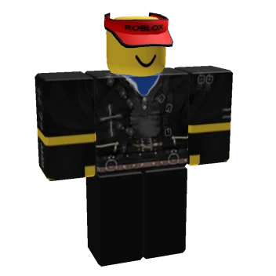

N0ob (C00l3stN0ob) is a unique entity born within the Roblox universe. It is the first and only known member of the CatBloxian race. Combining feline instincts with a blocky structure, it possesses a completely distinct existence. In its earliest days, N0ob walked on all fours and heard human speech only as muffled, meaningless sounds.
During its early childhood, N0ob was trapped alone for 3 agonizing days in a freezing, sub-zero winter environment. This terrifying event caused a lifelong trauma regarding enclosed spaces and being trapped within four walls.
Michael's Heroic Rescue: It was Michael Jackson himself who found N0ob, rescued it from the deadly cold, and saved its life. This heroic moment laid the foundation for their unbreakable bond, turning Michael into N0ob's ultimate savior and protector.
Sonic’s Role: Sonic the Hedgehog used to be N0ob's closest, most cherished best friend during that early era. However, as N0ob grew older and its life shifted completely toward the music industry, this close bond eventually became a thing of the past.
Following the rescue, Michael legally adopted N0ob. Even though there is no genetic link between them, Michael raised N0ob with pure fatherly love and shielded it from the harsh realities of the world.
The Cruelty of Joseph Jackson: Michael's strict father, Joseph Jackson, was always an oppressive, dark, and abusive figure. When N0ob was just 7 years old, Joseph tried to whip it with a belt in the studio just for making a mistake. Michael instantly stepped in, slapped Joseph across the face to protect N0ob, and threw his father out. Right after this intense event, Michael and N0ob channeled their energy into finishing "I Want You Back" with absolutely no introduction needed.
There is a massive, world-shaking secret that N0ob is completely unaware of: Its biological mother is the Queen of Pop, Madonna! While N0ob grows up completely oblivious to this fact, Madonna is the only one who knows the truth. From afar, she closely and proudly watches her own flesh and blood conquer the music industry, waiting for the right time to reveal the secret.
N0ob's appearance perfectly reflects its mixed nature as the only member of the CatBloxian race:

Right now, N0ob is 10 years old and taking its first massive standalone steps into music history:
While N0ob has great friends in its lore (like C00l3stB4c0n, Shrek, Po, Master Shifu, and IShowSpeed), the absolute center of its universe is Rose.
Rose is not just a digital Roblox character—she is N0ob's real-life girlfriend, and they are madly, deeply in love.
Rose sits right in the studio booth, watching N0ob record its historic tracks. Her presence gives 10-year-old N0ob the ultimate confidence and strength to hit those iconic high notes and ignore the looming shadow of Joseph Jackson entirely.